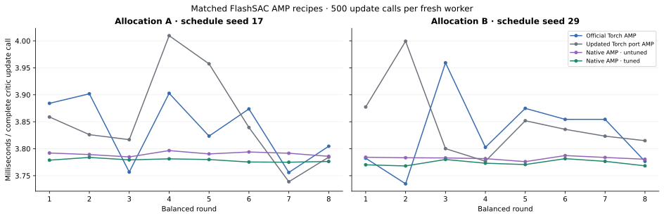
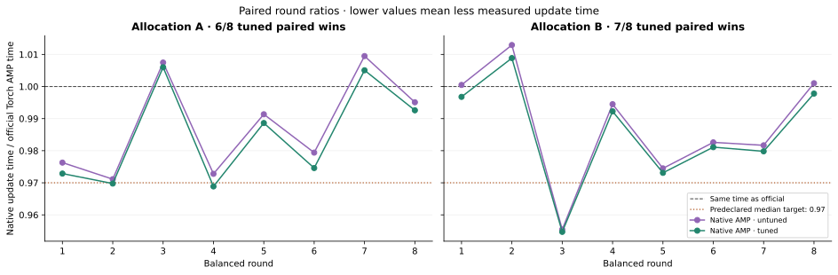
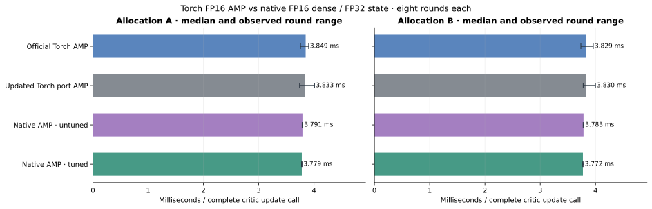

Balanced FlashSAC execution measurements
Abstract
Allocation A: tuned native used 1.84% less update time at the median paired ratio (0.9816), with 6/8 paired wins. Allocation B: tuned native used 1.33% less update time at the median paired ratio (0.9867), with 7/8 paired wins.
The predeclared target was not met on both allocations. These outcomes remain part of the report. These are descriptive execution measurements of matched synthetic inputs on two L40 allocations; they establish no policy-quality or universal-speed result.
Back to the experiment overview.
1 · Protocol and interpretation
Four recipes were measured in fresh processes: pristine official compiled Torch AMP, the updated RoboLearn compiled Torch AMP port, and native CUDA AMP with tuning disabled or enabled. Each allocation used two shuffled 4×4 Williams schedules. Each recipe occupies each position once per square; directed immediate predecessor pairs balance within rounds. Cross-round boundary transitions are not separately balanced.
One call updates the critic; every second call also updates actor and temperature. Each fresh worker performs 100 warmup update/action calls, 100 separately timed action calls, then 500 measured update calls. Complete update timing includes replay sampling, reward scaling, default 7/2 CPU scalar metrics, optimizer work, projections and target EMA. Physics, rollout collection and policy quality are absent.
All processes load the exact same 89 canonical state arrays and bit-identical transition fixture. Optimizers/scalers/counters start empty before equal warmup. Different backend RNG implementations, reduction order and intermediate rounding permit different optimization trajectories. Native uses FP16 dense operands with FP32 accumulation, activations, master parameters and Adam; Torch uses FP16 autocast. Torch TF32/high policy follows the authors’ launcher.
The Torch port now also compiles categorical minimum-Q/projection and reward update/scale/moment helpers. Native tuning probes private zero-filled scratch and replaces the first valid cuBLASLt heuristic only with at least 3% median improvement and qualifying improvement in two of three paired probe batches. Full-update times assess whether those plan choices transfer to this fixture.
| Allocation | Schedule seed | Tuned paired wins | Median paired time ratio | Engineering target | Balanced protocol wall (min) |
|---|---|---|---|---|---|
| A | 17 | 6/8 | 0.9816 | Not met | 29.91 |
| B | 29 | 7/8 | 0.9867 | Not met | 29.85 |
Target fixed before measurements: at least 7/8 tuned-native wins and median paired native/official time ≤0.97 on each allocation. A target miss does not invalidate a correctly completed benchmark. Timing repetitions are neither independent training seeds nor confidence intervals. GPUs ran on separate allocations without locked clocks or a same-device crossover design.
2 · Measured execution time



| Allocation | Recipe / precision | Median (ms/call) | Observed round range (ms) | Completed C / A / T | Skipped C / A / T |
|---|---|---|---|---|---|
| A | Official FlashSAC · Torch FP16 AMP | 3.849 | 3.756–3.903 | 4,000 / 2,000 / 2,000 | 0 / 0 / 0 |
| A | RoboLearn port · Torch FP16 AMP | 3.833 | 3.739–4.010 | 4,000 / 2,000 / 2,000 | 0 / 0 / 0 |
| A | Native CUDA · FP16 dense / FP32 state | 3.791 | 3.785–3.797 | 4,000 / 2,000 / 2,000 | 0 / 0 / 0 |
| A | Native CUDA + tuning · FP16 dense / FP32 state | 3.779 | 3.775–3.784 | 4,000 / 2,000 / 2,000 | 0 / 0 / 0 |
| B | Official FlashSAC · Torch FP16 AMP | 3.829 | 3.735–3.959 | 4,000 / 2,000 / 2,000 | 0 / 0 / 0 |
| B | RoboLearn port · Torch FP16 AMP | 3.830 | 3.777–3.999 | 4,000 / 2,000 / 2,000 | 0 / 0 / 0 |
| B | Native CUDA · FP16 dense / FP32 state | 3.783 | 3.776–3.787 | 4,000 / 2,000 / 2,000 | 0 / 0 / 0 |
| B | Native CUDA + tuning · FP16 dense / FP32 state | 3.772 | 3.768–3.782 | 4,000 / 2,000 / 2,000 | 0 / 0 / 0 |
3 · Setup, cache and clock context
Four preconditioning workers run first in fixed recipe order, then 32 measured workers. Compiler disk caches persist; selected native algorithms do not persist between processes and are retuned in each tuned worker’s setup. Reported startup is construction/loading/replay ingestion/preparation plus warmup; the following tables separate warmup. Fixture export, CPU audits, imports, source verification and checkpoint IO are outside that startup subtotal. Worker wall and balanced protocol wall retain those broader costs. These are ordered shared-cache observations, not independent cold starts.
Excluded preconditioning workers · all outcomes retained
| Allocation | Recipe | Setup excluding warmup (s) | Warmup (s) | Whole worker wall (s) |
|---|---|---|---|---|
| A | Official Torch AMP | 34.658 | 416.817 | 467.889 |
| A | Updated Torch port AMP | 3.905 | 30.350 | 67.516 |
| A | Native AMP · untuned | 2.535 | 0.428 | 34.884 |
| A | Native AMP · tuned | 2.210 | 0.426 | 35.287 |
| B | Official Torch AMP | 35.463 | 409.611 | 461.815 |
| B | Updated Torch port AMP | 3.254 | 34.392 | 71.507 |
| B | Native AMP · untuned | 2.571 | 0.428 | 35.395 |
| B | Native AMP · tuned | 2.090 | 0.424 | 33.688 |
Measured fresh workers · medians over eight rounds
| Allocation | Recipe | Setup excluding warmup (s) | Warmup (s) | Whole worker wall (s) |
|---|---|---|---|---|
| A | Official Torch AMP | 16.392 | 7.099 | 38.642 |
| A | Updated Torch port AMP | 2.838 | 7.764 | 42.011 |
| A | Native AMP · untuned | 1.286 | 0.428 | 33.094 |
| A | Native AMP · tuned | 2.168 | 0.426 | 34.041 |
| B | Official Torch AMP | 16.262 | 6.965 | 38.557 |
| B | Updated Torch port AMP | 2.749 | 7.511 | 41.812 |
| B | Native AMP · untuned | 1.347 | 0.426 | 33.326 |
| B | Native AMP · tuned | 2.145 | 0.426 | 34.237 |
Balanced protocol wall includes all 36 worker processes and controller validation/checkpoint activity. It excludes the focused diagnostic and dependency/OS setup. Per recipe, 8 measured workers supply 4,000/2,000/2,000 timed optimizer updates; including their warmups and the preconditioning worker, each recipe performs 5,400/2,700/2,700 total updates. Every attempted optimizer update completed.
| Allocation | Outside-timer telemetry | Observed range | Samples |
|---|---|---|---|
| A | SM clock (MHz) | 2490–2490 | 64 |
| A | Temperature (°C) | 34–42 | 64 |
| A | Power draw (W) | 146–297 | 64 |
| B | SM clock (MHz) | 2490–2490 | 64 |
| B | Temperature (°C) | 34–44 | 64 |
| B | Power draw (W) | 161–292 | 64 |
Read-only nvidia-smi samples are taken immediately outside update timers. They describe sampled device state, not continuous clocks or a causal explanation of latency differences. Missing telemetry is retained as unavailable.
4 · Numerical and provenance controls
Each allocation passed 14 focused primitive/learner diagnostic stages, including tuned-plan selection, preparation nonmutation, eager/captured controls, grouped gradient clearing, in-place checkpoint reload and continuation. The independent CPU audit checked all manifest entries, all 36 workers, exact canonical/replay fixtures, empty initial Adam/scaler state, measured and cumulative device/optimizer counters, finite updated parameters, native checkpoint arrays and Torch checkpoint tensors/optimizer steps. Prepared native plans remain tied to their original device and buffer addresses.
G1-shaped synthetic inputs: 123 observations, 37 actions, 1,024 parallel inputs, replay batch 2,048; actor width 128, critic width 256, two residual blocks, 101 categorical bins. No Isaac Lab environment or simulation step runs in this experiment. Runtime: Python 3.12.14, Torch 2.11.0+cu130, Warp 1.17.0 and Warp-NN 0.4.1. The official standalone learner is executed unchanged outside its declared Python <3.12 support matrix.
RoboLearn source 33870ab06794; pristine FlashSAC authors’ source 87edc9061150. Architecture, losses and algorithm credit belong to the FlashSAC paper and authors; source licenses and adaptations are recorded in ATTRIBUTION.md. This report evaluates execution only.
Sanitized derived data and evidence hashes · Report checksums. Original JSON, traces and native checkpoints remain preserved separately; public data excludes local paths, internal hosts and GPU UUIDs.